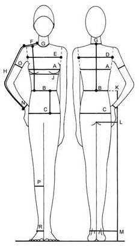

|  | |||
| symbol | what | centimeters | inches |
|---|---|---|---|
| A | bust | 111 | 43.7 |
| B | waist | 108 | 42.5 |
| C | hips | 118 | 46.6 |
| D | back width | 42 | 16.5 |
| E | front chest | 47 | 18.5 |
| F | shoulder | 16 | 6.3 |
| G | neck size | 44 | 17.3 |
| H | sleeve | 62 | 24.4 |
| K-M | outside leg | 109 | 42.9 |
| L-M | inside leg | 73 | 28.7 |
| M | knee | 9 | 3.5 |
| N | wrist | 18 | 7.0 |
| O | upper arm | 27 | 10.6 |
| P | calf | 43 | 16.9 |
| R | ankle | 26 | 10.2 |
| G-B | nape to waist | 49 | 19.3 |
| B-C | waist to hip | 12 | 4.7 |
| F-B | front shoulder to waist | 54 | 21.3 |
| ? | head diameter | 58 | 22.8 |